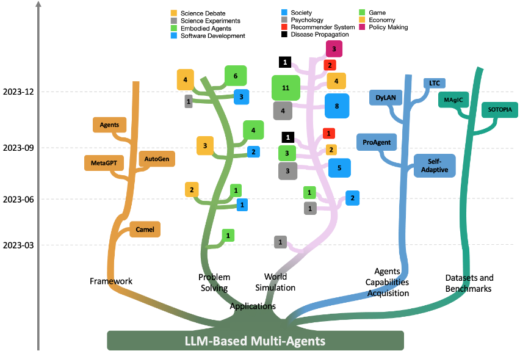
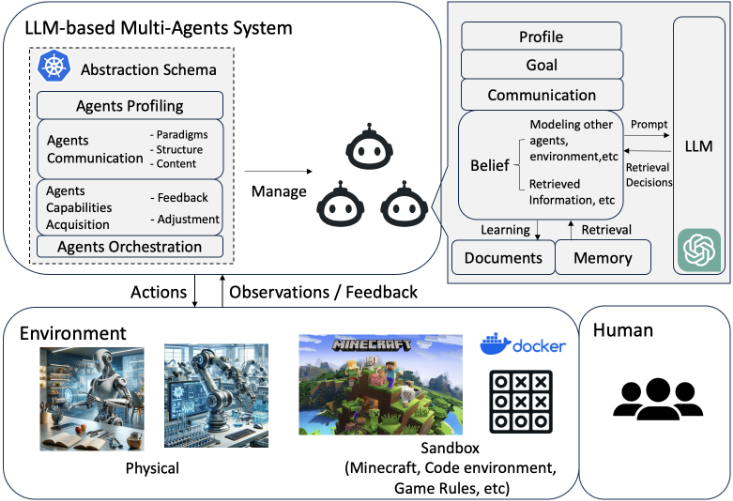
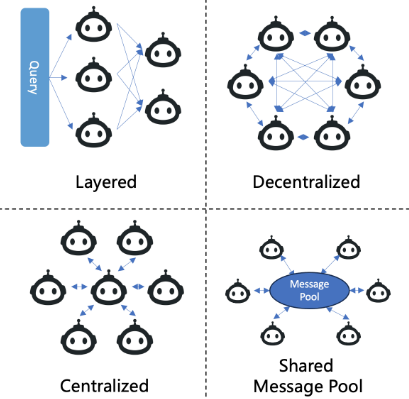

基于大语言模型的多智能体：进展与挑战综述
该综述系统梳理了基于 LLM 的多智能体（LLM-MA）系统这一快速发展的领域。针对此前研究各自独立、缺乏系统性总结的问题，论文提出了从 agents-environment interface、agent profiling、agent communication、agent capability acquisition 四个维度解剖 LLM-MA 系统的分析框架，并将应用归为 problem solving 与 world simulation 两大主线。文中对比了 MetaGPT、CAMEL、AutoGen 三个开源多 Agent 框架，汇总了常用数据集与基准，并指出级联幻觉、集体智能获取、规模化编排（Agents Orchestration）、评测基准缺失等关键挑战。对团队而言，它提供了多 Agent 分工协作、通信结构选型与评测方法的全景式参考，其中软件开发的角色分工流水线（如 MetaGPT 将 SOP 编码进 prompt）与团队的代码生成/审查场景直接相关。
LLM-based 多智能体研究论文快速增长、研究者从 AI 扩展到社会科学、心理学等领域，但此前工作相互独立，缺乏系统性综述来建立领域蓝图、统一分析语言并剖析未来挑战。论文旨在回答：LLM-MA 模拟哪些领域与环境、agent 如何被画像与通信、哪些机制促成 agent 能力增长，并为入门者整理常用数据集与基准。
综述方法：提出四维解剖框架——agents-environment interface 分为 Sandbox/Physical/None 三类；agent profiling 分为 Pre-defined/Model-Generated/Data-Derived；agent communication 从 Paradigms（Cooperative/Debate/Competitive）、Structure（Layered/Decentralized/Centralized/Shared Message Pool）与 Content 三方面分析；capability acquisition 从 Feedback 的四类来源（环境、agent 交互、人类、无）与三种调整策略（Memory、Self-Evolution、Dynamic Generation）归纳。应用二分为 problem solving（软件开发、具身 Agent、科学实验、科学辩论）与 world simulation（社会、游戏、心理、经济、推荐、政策、疾病传播），并汇总 MetaGPT/CAMEL/AutoGen 框架、数据集基准与六大挑战方向。
本文为综述，未报告自有量化实验结果
正文引用的量化观察：社会模拟规模从 25 个 generative agents（Park et al., 2023）扩展到 1,000 个 personas（Social Simulacra），再到 8,563 与 17,945 个 agents 的大规模社交网络模拟（Gao et al., 2023a）
Agent4Rec 基于 MovieLens-1M 数据集初始化 1000 个 generative agents，模拟推荐环境中的用户交互并复现 filter bubble 等现象
Du et al. (2023) 在六项推理与事实准确性任务上验证多智能体辩论可提升 factuality；Xiong et al. (2023) 报告辩论可提升不同 LLM 间的 inter-consistency（正文未给出具体数值）
此前综述主要面向单个 LLM agent（如 Xi et al., 2023; Wang et al., 2023b），本文是较早专门针对 LLM-based 多智能体系统的系统性综述：提出 interface/profiling/communication/capability 四维解剖框架，统一覆盖 problem solving 与 world simulation 两条应用主线，配套持续更新的开源 GitHub 仓库，并系统指出 Agents Orchestration、级联幻觉、多 Agent 评测基准缺失等此前未被整体讨论的挑战。
相关度级别：high
命中能力域：3.4 多智能体协作 | 3.3 Agent 架构与工具使用 | 3.5 评测与可靠使用 | 3.1 上下文工程与记忆
理由：论文核心议题与团队 3.4 多智能体协作几乎完全重合：通信范式/结构/内容的三维分类、MetaGPT 的 Shared Message Pool、Agents Orchestration 等内容可直接指导团队多 Agent 编排与分工设计；四维框架中的 profiling、interface 与 capability acquisition（含 Memory 机制、feedback 来源分类）覆盖 3.3 与 3.1 的核心技术；第 5.2/6.5 节的基准汇总与评测挑战、6.2 节的级联幻觉分析对应 3.5；软件开发多 Agent 案例（MetaGPT 将 SOP 编码进 prompt、按产品经理/工程师等角色分工）与团队代码生成/审查场景直接相关。作为综述它不提供可直接复用的实现，但适合作为团队建立多 Agent 方法论词汇、框架选型与评测规划的地图。
建议动作：深入精读并做内部分享
arXiv:2402.01680v2 [cs.CL] 2024年4月19日
Taicheng Guo 1 , Xiuying Chen 2 , Yaqi Wang 3 ∗ , Ruidi Chang , Shichao Pei 4 , Nitesh V. Chawla 1 , Olaf Wiest 1 , Xiangliang Zhang 1 †
1 圣母大学，2 阿卜杜拉国王科技大学 3 南方科技大学，4 马萨诸塞大学波士顿分校 { tguo2, nchawla, owiest, xzhang33 } @nd.edu, xiuying.chen@kaust.edu.sa, ywang84@nd.edu, ruidic@alumni.cmu.edu, shichao.pei@umb.edu
大语言模型（Large Language Models, LLMs）已在众多任务中取得了显著成功。由于 LLM 具有令人瞩目的规划与推理能力，它们已被用作自主 Agent 来自动完成许多任务。近来，在将单个 LLM 用作单一规划或决策 Agent 的研究进展基础上，基于 LLM 的多智能体系统在复杂问题求解与世界模拟方面取得了长足进展。为向学界提供这一活跃领域的概览，我们撰写了本综述，对基于 LLM 的多智能体系统的核心方面及其面临的挑战进行深入探讨。我们的目标是让读者对以下问题获得深入的理解：基于 LLM 的多智能体模拟了哪些领域和环境？这些 Agent 如何被刻画，它们之间如何通信？哪些机制促进了 Agent 能力的增长？对于有意深入研究该领域的读者，我们还总结了常用的数据集或基准测试（benchmark），以便其便捷获取。为使研究者及时了解最新研究进展，我们维护了一个开源 GitHub 仓库，专门用于梳理基于 LLM 的多智能体系统的研究工作。
大语言模型（Large Language Models, LLMs）近来展现出卓越的潜力，有望达到与人类相当的推理与规划能力水平。这种能力恰好契合人类对自主 Agent 的期望，即能够感知周围环境、做出决策并采取相应行动 [Xi et al. , 2023; Wooldridge and Jennings, 1995; Russell and Norvig, 2009; Guo et al. , 2023; Liang et al. , 2023]。因此，基于 LLM 的 Agent 得到了广泛研究并迅速发展，能够理解和生成类人的指令，从而在广泛的情境中促进复杂的交互与决策 [Yao et al. , 2023; Shinn et al. , 2023; Li et al. , 2023d]。一些及时的综述论文系统性地总结了基于 LLM 的 Agent 的研究进展，如文献 [Xi et al. , 2023; Wang et al. , 2023b] 所示。
∗ 本工作是 Yaqi 在圣母大学（University of Notre Dame）担任访问学生期间完成的。
† 通讯作者。
在单个基于大语言模型（LLM）的 Agent 所展现出的令人鼓舞的能力的基础上，研究者提出了基于 LLM 的多智能体，以利用多个 Agent 的集体智慧以及各自专门的角色设定与技能。与使用单个由 LLM 驱动的 Agent 的系统相比，多智能体系统通过以下两种方式提供了更高级的能力：1）将 LLM 特化为各种不同的 Agent，每个 Agent 具有不同的能力；2）使这些多样化的 Agent 之间能够进行交互，从而有效地模拟复杂的真实世界环境。在这种背景下，多个自主 Agent 协同参与规划、讨论和决策，映射了人类在解决问题任务中群体工作的协作本质。这种方法充分利用了 LLM 的交流能力，即利用其生成用于交流的文本并响应文本输入的能力。此外，该方法还发掘了 LLM 在各个领域的广博知识及其在特定任务上实现特化的潜在能力。近期研究已经表明，在利用基于 LLM 的多智能体解决各类任务方面取得了令人鼓舞的成果，例如软件开发 [Hong et al. , 2023; Qian et al. , 2023]、多机器人系统 [Mandi et al. , 2023; Zhang et al. , 2023c]、社会模拟 [Park et al. , 2023; Park et al. , 2022]、政策模拟 [Xiao et al. , 2023; Hua et al. , 2023] 以及游戏模拟 [Xu et al. , 2023c; Wang et al. , 2023c]。由于该领域具有跨学科研究的性质，它吸引了各种不同背景的研究者，其范围已超出 AI 专家，扩展到来自社会科学、心理学和政策研究领域的研究者。如图 1 所示（其设计灵感来源于 [Gao et al. , 2023b]），研究论文的数量正在迅速增长，从而不断扩大基于 LLM 的多智能体研究的影响力。尽管如此，此前的研究工作大多是独立开展的，导致缺乏一篇系统性的综述来对这些工作进行总结、建立该领域的全面蓝图并审视未来的研究挑战。这凸显了我们工作的重要性，也构成了我们呈现这篇专注于基于 LLM 的多智能体系统研究的综述论文的动机。
我们期望本综述能够为大语言模型（LLM）的研究与开发，以及更广泛地采用 LLM 的跨学科研究做出重要贡献。读者将获得对基于大语言模型的多智能体（LLM-MA）系统的全面概览，掌握构建基于 LLM 的多智能体系统所涉及的基本概念，并把握这一充满活力的领域的最新研究趋势与应用。我们认识到，该领域尚处于早期阶段，正随着新的方法与应用快速演进。为提供一种可持续的资源以补充本综述论文，我们维护了一个开源 GitHub 仓库 1。我们希望本综述能够激发该领域进一步的探索与创新，以及在众多研究学科中的应用。

为帮助来自不同背景的读者理解 LLM-MA 技术，并通过解决尚未解决的问题来补充现有综述，我们按如下方式组织本综述论文。在第 2 节铺陈背景知识之后，我们提出一个关键问题：LLM-MA 系统如何与协作式任务求解环境相适配？为回答这一问题，我们在第 3 节中提出了一个全面的框架（schema），用于定位、区分并关联 LLM-MA 系统的各个方面。我们通过讨论以下内容深入探究该问题：1) Agent-环境接口（agents-environment interface），详细说明 Agent 如何与任务环境交互；2) Agent 画像（agent profiling），解释 LLM 如何刻画一个 Agent 使其以特定方式行事；3) Agent 通信（agent communication），考察 Agent 之间如何交换消息并开展协作；4) Agent 能力获取（agent capability acquisition），探讨 Agent 如何发展其有效解决问题的能力。审视 LLM-MA 相关研究的另一个视角是其应用。在第 4 节中，我们将当前应用归为两大主流：面向问题求解的多智能体（multi-agents for problem-solving）与面向世界模拟的多智能体（multi-agents for world simulation）。为帮助读者识别合适的工具与资源，我们在第 5 节中介绍用于研究 LLM-MA 的开源实现框架，以及可用的数据集与基准测试（benchmark）。基于前述总结，我们在第 6 节中开启对未来研究挑战与机遇的讨论。结论总结于第 7 节。
1 https://github.com/taichengguo/LLM MultiAgents Survey Papers
我们首先概述基于大语言模型（LLM）的单 Agent 系统所具备的能力，以此引入背景知识，该概述沿用 [Weng, 2023] 中的讨论。
决策思维（Decision-making Thought）：该术语指基于 LLM 的 Agent 在提示（prompt）的引导下，将复杂任务分解为更小的子目标 [Khot et al., 2023]，有条理地深入思考各个部分（有时会探索多条路径）[Yao et al., 2023]，并从过往经验中学习 [Shinn et al., 2023]，从而在复杂任务上做出更优决策的能力。这种能力增强了单个基于 LLM 的 Agent 的自主性，并提升了其解决问题的效能。
工具调用（Tool-use）：基于 LLM 的 Agent 的工具调用能力使其能够利用外部工具与资源来完成任务，从而增强其功能能力，并在多样且动态的环境中更有效地运作 [Li et al., 2023d; Ruan et al., 2023; Gao et al., 2023b]。
记忆（Memory）：该能力指基于 LLM 的 Agent 通过上下文学习（in-context learning）[Dong et al., 2023a] 作为短期记忆，或利用外部向量数据库 [Lewis et al., 2021] 作为长期记忆，从而在较长时间内保存与检索信息的能力 [Wang et al., 2023b]。这种能力使单个基于 LLM 的 Agent 能够保持上下文连贯性，并增强从交互中学习的效果。
由 LLM 赋能的单智能体（Single-Agent）系统已展现出令人鼓舞的认知能力 [Sumers et al. , 2023]。这类系统的构建侧重于设计其内部机制以及与外部环境的交互。相反，基于 LLM 的多智能体（LLM-MA）系统则强调多样化的 Agent 角色设定、Agent 间的交互以及集体决策过程。从这一视角来看，通过多个自主 Agent 的协作可以应对更加动态和复杂的任务，其中每个 Agent 都具备独特的策略与行为，并彼此进行通信。
在本节中，我们深入探究 LLM-MA 系统的复杂细节。在这类系统中，多个自主 Agent 开展协作活动，其方式类似于人类在问题解决场景中的群体动态。我们着力探讨的一个关键问题是：这些 LLM-MA 系统如何与其运行环境以及其设计所要实现的集体目标对齐。为阐明这一点，我们在图 2 中给出了这类系统的总体架构。我们的分析剖析了这些系统的运行框架，重点关注四个关键方面：Agent 与环境的接口、Agent 角色设定（profiling）、Agent 通信以及 Agent 能力获取。
运行环境定义了 LLM-MA 系统部署并与之交互的特定情境或场景。例如，这些环境可以是软件开发 [Hong et al. , 2023]、游戏 [Mao et al. , 2023]，以及金融市场 [Li et al. , 2023g] 甚至社会行为建模 [Park et al. , 2023] 等各类其他领域。基于 LLM 的 Agent 在环境中进行感知并采取行动，而环境反过来又会影响它们的行为与决策。例如，在狼人杀（Werewolf Game）仿真中，沙盒环境设定了游戏的框架，包括昼夜转换、讨论时段、投票机制和奖励规则。诸如狼人和预言家等 Agent 执行杀人或查验身份等特定动作。在这些动作之后，Agent 会从环境接收反馈，从而获知游戏的当前状态。这些信息引导 Agent 随时间推移调整自身策略，以应对不断演变的游戏进程以及与其他 Agent 的交互。Agent 与环境的接口（Agents-Environment Interface）指的是 Agent 与环境进行交互并感知环境的方式。正是通过这一接口，Agent 才能理解其周围环境、做出决策，并从其行动的结果中学习。我们将 LLM-MA 系统中现有的接口分为三种类型：沙盒（Sandbox）、物理（Physical）和无（None），详见表 1。沙盒（Sandbox）是指由人类构建的仿真或虚拟环境，Agent 可以在其中更自由地交互，并尝试各种动作和策略。这种接口广泛应用于软件开发（以代码解释器作为仿真环境）[Hong et al. , 2023]、游戏（以游戏规则作为仿真环境）[Mao et al. , 2023] 等领域。物理（Physical）是指真实世界环境，Agent 在其中与物理实体交互，并遵循现实世界的物理规律和约束。在物理空间中，Agent 通常需要采取可能产生直接物理后果的行动。例如，在扫地、制作三明治、打包食品杂货和整理橱柜等任务中，机器人 Agent 需要迭代地执行动作、观察物理环境，并持续改进其动作 [Mandi et al. , 2023]。最后，无（None）是指不存在特定外部环境、Agent 不与任何环境发生交互的场景。例如，许多应用 [Du et al. , 2023; Xiong et al. , 2023; Chan et al. , 2023] 利用多个 Agent 就某一问题进行辩论以达成共识。这些应用主要关注 Agent 之间的通信，而不依赖于外部环境。
在 LLM-MA 系统中，Agent 由其特质、动作和技能来定义，这些要素经过量身定制以满足特定目标。在不同的系统中，Agent 承担不同的角色，每个角色都有涵盖特征、能力、行为和约束的全面描述。例如，在游戏环境中，Agent 可能被刻画为具有不同角色和技能的玩家，各自对游戏目标做出不同的贡献。在软件开发中，Agent 可以承担产品经理和工程师的角色，各自拥有指导开发过程的职责和专业知识。类似地，在辩论平台上，Agent 可能被指定为正方、反方或裁判，各自拥有独特的功能和策略，以有效履行其角色。这些画像对于界定 Agent 在各自环境中的交互方式及其有效性至关重要。表 1 列出了近期 LLM-MA 工作中的 Agent 画像。
关于 Agent 画像方法，我们将其归纳为三种类型：预定义（Pre-defined）、模型生成（Model-Generated）和数据衍生（Data-Derived）。在预定义的情况下，Agent 画像由系统设计者明确定义。模型生成方法通过模型（例如大语言模型）来创建 Agent 画像。数据衍生方法则基于已有数据集来构建 Agent 画像。


框架，其中 Agent 彼此直接通信，这种结构常见于世界模拟应用中。集中式通信涉及由一个中央 Agent 或一组中央 Agent 协调系统的通信，其他 Agent 主要通过该中央节点进行交互。共享消息池（Shared Message Pool）由 MetaGPT [Hong et al. , 2023] 提出，以提高通信效率。这种通信结构维护一个共享消息池，Agent 在其中发布消息，并根据各自的画像订阅相关消息，从而提升
Agent 能力获取（Agents Capabilities Acquisition）是基于大语言模型的多智能体（LLM-MA）中一个至关重要的过程，它使 Agent 能够动态地学习与演化。在此背景下，存在两个基本概念：Agent 应从中学习以增强自身能力的反馈类型，以及 Agent 借以调整自身从而有效解决复杂问题的策略。
反馈：反馈涉及 Agent 所接收到的关于其动作结果的关键信息，帮助 Agent 了解其动作的潜在影响，并适应复杂且动态变化的问题。在大多数研究中，提供给 Agent 的反馈形式为文本。根据 Agent 接收反馈的来源，可将其分为四种类型。1) 来自环境的反馈（Feedback from Environment），例如来自真实世界环境或虚拟环境 [Wang et al. , 2023b]。这种反馈在大多数面向问题求解场景的 LLM-MA 中十分普遍，包括软件开发（Agent 从 Code Interpreter 获取反馈）以及具身多智能体系统（机器人从真实世界或仿真环境中获取反馈）。2) 来自 Agent 交互的反馈（Feedback from Agents Interactions）是指反馈来自其他 Agent 的评判或 Agent 之间的通信。这种反馈常见于科学辩论等问题求解场景，Agent 通过通信学会批判性地评估并完善结论。在游戏模拟等世界模拟场景中，Agent 学会根据其他 Agent 之间先前的交互来改进策略。3) 人类反馈（Human Feedback）直接来自人类，对于使多智能体系统与人类的价值观和偏好保持一致至关重要。这种反馈被广泛应用于大多数“人在回路”（Human-in-the-loop）应用中 [Wang et al. , 2021]。最后是 4) 无反馈（None）。在某些情况下，不会向 Agent 提供任何反馈。这种情况常出现在侧重于分析模拟结果而非 Agent 规划能力的世界模拟工作中。在这类场景（如传播模拟）中，重点在于结果分析，因此反馈并不是系统的组成部分。
智能体对复杂问题的调整（Agents Adjustment to Complex Problems）：为增强自身能力，LLM-MA 系统中的智能体可以通过三种主要方案进行适应。1）记忆（Memory）。大多数 LLM-MA 系统利用记忆模块帮助智能体调整其行为。智能体将先前交互和反馈的信息存储在记忆中。在执行动作时，它们可以检索相关且有价值的记忆，特别是那些包含针对过去类似目标的成功动作的记忆，如 [Wang et al., 2023b] 所强调的。这一过程有助于改进其当前动作。2）自我进化（Self-Evolution）。不同于基于记忆的方案那样仅依赖历史记录来决定后续动作，智能体可以通过修改自身实现动态自我进化，例如改变其初始目标和规划策略，并基于反馈或通信日志进行自我训练。[Nascimento et al., 2023] 提出了一种自控制循环过程，使多智能体系统中的每个智能体都能实现自我管理并自适应动态环境，从而提高多个智能体的协作效率。[Zhang et al., 2023b] 提出了 ProAgent，它能够预判队友的决策，并基于智能体之间的通信日志动态调整每个智能体的策略，促进相互理解并提升协作规划能力。[Wang et al., 2023a] 讨论了一种通过通信学习（Learning through Communication, LTC）范式，利用多智能体的通信日志生成数据集以训练或微调 LLM。LTC 使智能体能够通过与环境和其它智能体的交互实现持续适应和改进，突破了上下文学习（in-context learning）或监督微调的局限——后者未能充分利用在与环境和外部工具交互过程中收到的反馈来进行持续训练。自我进化使智能体能够自主调整其画像（profile）或目标，而不仅仅是从历史交互中学习。3）动态生成（Dynamic Generation）。在某些场景下，系统可以在运行过程中即时生成新的智能体 [Chen et al., 2023a; Chen et al., 2023c]。这一能力使系统能够有效扩展和适应，因为它可以引入专门为应对当前需求和挑战而设计的智能体。
随着 LLM-MA 系统中智能体数量的扩大，管理各类智能体的复杂度不断攀升，已成为一个关键问题。智能体编排（Agents Orchestration）作为一个核心挑战开始显现，并在 [Moura, 2023; Dibia, 2023] 中开始受到关注。我们将在第 6.4 节进一步讨论这一主题。
LLM-MA 系统已被应用于广泛的领域。我们在表 1 中总结了两类应用：问题求解（Problem Solving）和世界模拟（World Simulation）。下面我们将对这些应用进行详细阐述。需要注意的是，这是一个快速发展的研究领域，几乎每天都有新的应用出现。我们维护了一个开源仓库，用于报告最新的研究工作。
将 LLM-MA 用于问题求解的主要动机是发挥具备专业知识的 Agent 的集体能力。这些 Agent 各自作为独立个体，通过协作来有效解决复杂问题，例如软件开发、具身 Agent、科学实验和科学辩论。接下来将介绍这些应用示例。
鉴于软件开发是一项需要产品经理、程序员和测试人员等多种角色协作的复杂工作，LLM-MA 系统通常被设定为模拟这些不同的角色，并通过协作来应对这一复杂挑战。遵循软件开发的瀑布模型或标准化操作程序（SOPs）工作流，Agent 之间的通信结构通常是分层的。Agent 通常与代码解释器、其他 Agent 或人类进行交互，以迭代式地改进所生成的代码。[Li et al. , 2023b] 首次提出了一个简单的角色扮演 Agent 框架，该框架利用两个角色之间的互动，基于一句话的用户指令实现自主编程。它为理解交流型 Agent 的“认知”过程提供了洞见。[Dong et al. , 2023b] 让 LLM 扮演软件开发中不同子任务的“专家”，自主协作以生成代码。此外，[Qian et al. , 2023] 提出了一个面向软件开发的端到端框架，利用多个 Agent 进行软件开发，而未融入先进的人类团队协作经验。[Hong et al. , 2023] 首次引入人类工作流方面的洞见，以获得更可控且经过验证的性能。它将 SOPs 编码到提示中，以增强结构化的协调。[Huang et al. , 2023a] 通过解决在代码片段生成与有效的测试用例生成、执行和优化之间取得平衡的问题，对基于多智能体的编程进行了更深入的探索。
| Motivation | Research Domain &Goals | Research Domain &Goals | Work | Agents-Env..Interface | Agents Profiling.Profiling methods | Agents Profiling.Profiles (examples) | Agents.Paradigms | Agents.Communication Structure | Agents Capabilities Acquisition.Feedback from | Agents Capabilities Acquisition.Agents Adjustment |
|---|---|---|---|---|---|---|---|---|---|---|
| [Qian et al. , 2023] | Sandbox | Pre-defined, Model-Generated | CTO, programmer | Cooperative | Layered | Environment, Agent interaction, Human | Memory, Self-Evolution | |||
| Software development | Software development | [Hong et al. , 2023] | Sandbox | Pre-defined | Product Manager, Engineer | Cooperative | Layered, Shared Message Pool | Environment, Agent interaction, Human | Memory, Self-Evolution | |
| [Dong et al. , 2023b] | Sandbox | Pre-defined, Model-Generated | Analyst, coder | Cooperative | Layered | Environment, Agent interaction | Memory, Self-Evolution | |||
| Embodied Agents | Multi-robot planning | [Chen et al. , 2023d] | Sandbox, Physical | Pre-defined | Robots | Cooperative | Centralized, Decentralized | Environment, Agent interaction | Memory | |
| Embodied Agents | Multi-robot collaboration | [Mandi et al. , 2023] | Sandbox, Physical | Pre-defined | Robots | Cooperative | Decentralized | Environment, Agent interaction | Memory | |
| Problem Solving | Embodied Agents | Multi-Agents cooperation | [Zhang et al. , 2023c] | Sandbox | Pre-defined | Robots | Cooperative | Decentralized | Environment, Agent interaction | Memory |
| Science Experiments | Optimization of MOF | [Zheng et al. , 2023] | Physical | Pre-defined | Strategy planers, literature collector, coder | Cooperative | Centralized | Environment, Human | Memory | |
| Science Debate | Improving Factuality | [Du et al. , 2023] | None | Pre-defined | Agents | Debate | Decentralized | Agent interaction | Memory | |
| Science Debate | Examining, Inter-Consistency | [Xiong et al. , 2023] | None | Pre-defined | Proponent, Opponent, Judge | Debate | Centralized, Decentralized | Agent interaction | Memory | |
| Science Debate | Evaluators for debates | [Chan et al. , 2023] | None | Pre-defined | Agents | Debate | Centralized, Decentralized | Agent interaction | Memory | |
| Science Debate | Multi-Agents for Medication | [Tang et al. , 2023] | None | Pre-defined | Cardiology, Surgery | Debate, Cooperative | Centralized, Decentralized | Agent interaction | Memory | |
| Society | Modest Community (25 persons) | [Park et al. , 2023] | Sandbox | Model-generated | Pharmacy, shopkeeper | - | - | Environment, Agent interaction | Memory | |
| Society | Online community (1000 persons) | [Park et al. , 2022] | None | Pre-defined, Model-generated | Camping, fishing | - | - | Agent interaction | Dynamic Generation | |
| Society | Emotion propagation | [Gao et al. , 2023a] | None | Pre-defined, Model-generated | Real-world user | - | - | Agent interaction | Memory | |
| Society | Real-time social interactions | [Kaiya et al. , 2023] | Sandbox | Pre-defined | Real-world user | - | - | Environment, Agent interaction | Memory | |
| Society | Opinion dynamics | [Li et al. , 2023a] | None | Pre-defined | NIN, NINL, NIL | - | - | Agent interaction | Memory | |
| World Simulation | WereWolf | [Xu et al. , 2023b] [Xu et al. , 2023c] | Sandbox | Pre-defined | Seer, werewolf, villager | Cooperative, Debate, Competitive | Decentralized | Environment, Agent interaction | Memory | |
| World Simulation | Gaming | Avalon | [Light et al. , 2023a] [Wang et al. , 2023c] | Sandbox | Pre-defined | Servant, Merlin, Assassin | Cooperative, Debate, Competitive | Decentralized | Environment, Agent interaction | Memory |
| World Simulation | Welfare Diplomacy | [Mukobi et al. , 2023] | Sandbox | Pre-defined | Countries | Cooperative, Competitive | Decentralized | Environment, Agent interaction | Memory | |
| World Simulation | Psychology | Human behavior Simulation | [Aher et al. , 2023] | Sandbox | Pre-defined | Humans | - | - | Agent interaction | Memory |
| World Simulation | Psychology | Collaboration Exploring | [Zhang et al. , 2023d] | None | Pre-defined | Agents | Cooperative, Debate | Decentralized | Agent interaction | Memory |
| Economy | Macroeconomic simulation | [Li et al. , 2023e] | None | Pre-defined, Model-generated | Labor | Cooperative | Decentralized | Agent interaction | Memory | |
| Economy | Information Marketplaces | [Anonymous, 2023] | Sandbox | Pre-defined, Data-Derived | Buyer | Cooperative, Competitive | Decentralized | Environment, Agent interaction | Memory | |
| Economy | Improving financial trading | [Li et al. , 2023g] | Physical | Pre-defined | Trader | Debate | Decentralized | Environment, Agent interaction | Memory | |
| Economy | Economic theories | [Zhao et al. , 2023] | Sandbox | Pre-defined, Model-Generated | Restaurant, Customer | Competitive | Decentralized | Environment, Agent interaction | Memory, Self-Evolution | |
| Recommender Systems | Simulating user behaviors | [Zhang et al. , 2023a] | Sandbox | Data-Derived | Users from MovieLens-1M | - | - | Environment | Memory | |
| Recommender Systems | Simulating user-item interactions | [Zhang et al. , 2023e] | Sandbox | Pre-defined, Data-Derived | User Agents Item Agents | Cooperative | Decentralized | Environment, Agent interaction | Memory | |
| Policy | Public | [Xiao et al. , 2023] | None | Pre-defined | Residents | Cooperative | Decentralized | Agent interaction | Memory | |
| Making | Administration War Simulation | [Hua et al. , 2023] | None | Pre-defined | Countries | Competitive | Decentralized | Agent interaction | Memory | |
| Disease | Human Behaviors to epidemics | [Ghaffarzadegan et al. , 2023] | Sandbox | Pre-defined, Model-Generated | Conformity traits | Cooperative | Decentralized | Environment, Agent interaction | Memory | |
| Disease | Public health | [Williams et al. , 2023] | Sandbox | Pre-defined, Model-Generated | Adults aged 18 to 64 | Cooperative | Decentralized | Environment, Agent interaction | Memory, Dynamic Generation |
| Motivation | Research Domain &Goals | Research Domain &Goals | Work | Agents-Env..Interface | Agents Profiling.Profiling methods | Agents Profiling.Profiles (examples) | Agents.Paradigms | Agents.Communication Structure | Agents Capabilities Acquisition.Feedback from | Agents Capabilities Acquisition.Agents Adjustment |
大多数具身智能体应用本质上都利用多个机器人协同工作，以执行复杂的现实世界规划与操作任务，例如具有异构机器人能力的仓库管理。因此，LLMMA 可用于对具有不同能力的机器人进行建模，并使它们彼此协作以解决现实世界中的物理任务。[Dasgupta et al. , 2023] 首次探索了将 LLM 用作嵌入式智能体动作规划器的潜力。[Mandi et al. , 2023] 提出了 RoCo，这是一种新颖的多机器人协作方法，利用 LLM 进行高层通信与低层路径规划。每个机械臂都配备一个 LLM，并与逆运动学和碰撞检测相配合。实验结果证明了 RoCo 在协作任务中的适应性与成功。[Zhang et al. , 2023c] 提出了 CoELA——一种协作式具身语言智能体（Cooperative Embodied Language Agent），用于在 LLM-MA 设定下管理讨论与任务规划。这一具有挑战性的设定以去中心化控制、复杂的部分观测、高昂的通信开销以及多目标长时程任务为特征。[Chen et al. , 2023d] 研究了涉及大量机器人的场景中的通信挑战，因为受长上下文的影响，为每个机器人分配一个 LLM 将成本高昂且不切实际。该研究比较了集中式、去中心式以及两种混合模型共四种通信框架，以评估它们在协调复杂多智能体任务方面的有效性。[Yu et al. , 2023] 提出了用于多机器人协作视觉目标导航的 CoNavGPT，将 LLM 集成为全局规划器，为每个机器人分配前沿目标。[Chen et al. , 2023b] 提出了一种基于 LLM 的共识寻求框架，可作为协作规划器应用于多机器人聚合任务。
正如多个智能体可以扮演不同领域的专家并相互协作以解决软件开发（Software Development）与具身智能体（Embodied Agents）问题一样，多个智能体也可以组成一个科学团队来开展科学实验。与之前应用的一个重要区别在于人类监督所扮演的关键角色，这是由于科学实验的高昂成本以及 LLM 智能体的幻觉。人类专家处于这些智能体的中心，负责处理智能体的信息并向其提供反馈。[Zheng et al. , 2023] 利用多个基于 LLM 的智能体，每个智能体专注于科学实验中的特定任务，包括策略规划、文献检索、编程、机器人操作和实验器皿设计。所有这些智能体都与人类交互，协同工作以优化复杂材料的合成过程。
LLM-MA 可以被设置用于科学辩论场景，其中各智能体相互辩论，以在大规模多任务语言理解（Massive Multitask Language Understanding, MMLU）[Hendrycks et al. , 2020]、数学问题 [Cobbe et al. , 2021] 和 StrategyQA [Geva et al. , 2021] 等任务中增强集体推理能力。其主要思想是：每个智能体首先对问题给出自己的分析，随后进入联合辩论过程。经过多轮辩论，各智能体收敛于一个统一的共识答案。[Du et al. , 2023] 在一组六项不同的推理与事实准确性任务上采用了多智能体辩论过程，并证明 LLM-MA 辩论能够提升事实性。[Xiong et al. , 2023] 聚焦于常识推理任务，构建了与真实世界场景相契合的三阶段辩论，包括公平辩论、错配辩论和圆桌辩论。该论文还分析了不同 LLM 之间的相互一致性，并声称辩论能够提升这种相互一致性。[Tang et al. , 2023] 同样利用多个基于 LLM 的智能体作为不同的领域专家，对医疗报告开展协作讨论，以就医疗诊断达成共识。
LLM-MA 的另一个主流应用场景是世界模拟。该领域的研究正在快速增长，涵盖社会科学、游戏、心理学、经济学、政策制定等众多领域。在世界模拟中采用 LLM-MA 的关键原因在于其出色的角色扮演能力，这对于逼真地刻画模拟世界中的各种角色和观点至关重要。世界模拟项目的环境通常经过精心设计以反映所模拟的特定场景，智能体则被设计成各种不同的角色设定以匹配该情境。与专注于智能体协作的问题求解系统不同，世界模拟系统涉及多样化的智能体管理与通信方法，体现了现实世界交互的复杂性和多样性。接下来，我们探讨在不同领域开展的各种模拟。
在社会模拟中，LLM-MA 模型被用于模拟社会行为，旨在探索潜在的社会动态与传播过程、检验社会科学理论，并以逼真的社会现象填充虚拟空间和社区 [Park et al. , 2023]。借助 LLM 的能力，拥有独特角色设定的智能体之间进行广泛的交流，生成丰富的行为数据，以支持深入的社会科学分析。
社会模拟的规模随着时间的推移不断扩大，从较小、更贴近日常的场景起步，逐步发展到更大、更复杂的场景。[Park et al. , 2023] 的早期工作在一个令人联想到《模拟人生》（The Sims）的交互式沙盒环境中引入了生成式智能体，使终端用户能够通过自然语言与一个由 25 个智能体组成的小型社区进行互动。与此同时，[Park et al. , 2022] 开发了 Social Simulacra，构建了一个由 1,000 个人物角色组成的模拟社区。该系统接收设计者对某个社区的构想——包括社区的目标、规则和成员角色设定——并对其进行模拟，生成诸如发帖、回复甚至反社会行为等各类行为。在此基础上，[Gao et al. , 2023a] 进一步推进了这一概念，分别构建了由 8,563 个和 17,945 个智能体组成的庞大网络，用于模拟聚焦于性别歧视和核能主题的社交网络。这一演进展示了近期研究中模拟环境在复杂性和规模上的持续提升。诸如 [Chen et al. , 2023b; Kaiya et al. , 2023; Li et al. , 2023a; Li et al. , 2023f; Ziems et al. , 2023] 等近期研究则凸显了多智能体系统中不断演化的复杂性、LLM 对社交网络的影响，以及它们与社会科学研究的融合。
LLM-MA 非常适合用于创建模拟的游戏环境，使智能体能够在游戏中扮演各种角色。这项技术能够构建可控、可扩展且动态的环境，高度逼真地模拟人类交互，因此是测试一系列博弈论假说的理想选择 [Mao et al. , 2023; Xu et al. , 2023b; Gong et al. , 2023]。LLM-MA 所模拟的大多数游戏高度依赖自然语言交流，在不同游戏场景中提供了沙盒环境，可用于探索或测试涉及推理、合作、说服、欺骗、领导力等方面的博弈论假说。
[Akata et al. , 2023] 借助行为博弈论考察了 LLM 在交互式社交情境中的行为，特别是它们在重复囚徒困境（iterated Prisoner's Dilemma）和性别之战（Battle of the Sexes）等博弈中的表现。此外，[Xu et al. , 2023b] 提出了一个基于 ChatArena 库 [Wu et al. , 2023b] 的框架，让 LLM 参与狼人杀（Werewolf）等沟通类游戏，利用对过往交流的检索与反思来实现改进，并结合思维链（Chain-of-Thought, CoT）机制 [Wei et al. , 2022]。[Light et al. , 2023b] 探索了 LLM 智能体在游玩阿瓦隆（Resistance Avalon）方面的潜力，并提出了 AVALONBENCH——一个全面的游戏环境与基准测试（benchmark），用于进一步开发先进的 LLM 与多智能体框架。[Wang et al. , 2023c] 同样关注 LLM 智能体在阿瓦隆游戏中处理错误信息的能力，提出了递归沉思（Recursive Contemplation, ReCon）框架，以增强 LLM 辨别和反制欺骗性信息的能力。[Xu et al. , 2023c] 提出了一个将 LLM 与强化学习（reinforcement learning, RL）相结合的框架，用于为狼人杀游戏开发策略性语言智能体。该工作提出了一种新方法，可在动作集与状态集并非预先定义、而是处于自然语言设置中的情况下使用 RL 策略。[Mukobi et al. , 2023] 设计了“福利外交”（Welfare Diplomacy），它是零和桌游《外交》（Diplomacy）的一般和（general-sum）变体，玩家必须在军事征服与国内福利之间取得平衡。该工作还提供了一个开源基准测试，旨在帮助提升多智能体 AI 系统的合作能力。除此之外，还有一项工作 [Li et al. , 2023c] 在多智能体合作文本游戏中测试智能体的心智理论（Theory of Mind, ToM），即推理他人隐藏心理状态的能力，它是人类社会交互、协作与沟通的基础。[Fan et al. , 2023] 全面评估了 LLM 作为理性玩家的能力，并指出了基于 LLM 的智能体的弱点：即使在明确的博弈过程中，智能体在采取行动时仍可能忽视或修改精炼后的信念。
在心理学模拟研究中，与社会模拟类似，也利用多个智能体来模拟具有各种特质和思维过程的人类。然而，与社会模拟不同的是，心理学中的一种方法是将心理实验直接应用于这些智能体。
该方法侧重于通过统计方法观察和分析它们各异的行为。在这里，每个智能体独立运行，不与其他智能体交互，本质上代表不同的个体。另一种方法则与社会模拟更为接近，即多个智能体相互交互和交流。在这种场景下，心理学理论被用于理解和分析涌现出的行为模式。这种方法有助于研究人际动态和群体行为，为理解个体心理特质如何影响集体行动提供了洞见。[Ma et al. , 2023] 探讨了采用基于 LLM 的对话式智能体提供心理健康支持的心理学影响和结果。该研究强调，需要从心理学角度仔细评估在心理健康应用中使用基于 LLM 的智能体。[Kovaˇ c et al. , 2023] 提出了一个名为 SocialAI school 的工具，用于创建模拟社会交互的交互式环境。该工具借鉴发展心理学，以理解智能体如何习得、展示和演化诸如共同注意、交流和文化学习等社交技能。[Zhang et al. , 2023d] 探讨了具有不同特质和思维模式的 LLM 智能体如何模仿从众和多数决等类人社会行为。将心理学融入对智能体协作的理解，为审视和增强基于 LLM 的多智能体系统背后的机制提供了一个新颖的视角。[Aher et al. , 2023] 提出了图灵实验（Turing Experiments），用于评估大语言模型能够在多大程度上模拟人类行为的不同方面。图灵实验采用问答形式来模拟实验条件，复现心理学、经济学和社会学中的经典实验和现象。他们还设计了一种提示词，通过改变名字来模拟多个不同个体的回应。通过利用 LLM 模拟各种类型的个体，他们表明更大的模型能更忠实地复现人类行为，但也揭示了一种超准确失真（hyper-accuracy distortion），尤其是在基于知识的任务中。
LLM-MA 被用于模拟经济与金融交易环境，主要原因是它可以作为人类的隐式计算模型。在这些模拟中，智能体（Agent）被赋予禀赋和信息，并被设定预定义的偏好，从而能够在经济和金融情境中探索其行为。这类似于经济学家对“经济人”（homo economicus）建模的方式，即在某些经济理论中，人被刻画成为自身利益而追求财富的理性人 [Horton, 2023]。已有多项研究展示了 LLM-MA 在模拟经济场景中的多样化应用，涵盖宏观经济活动、信息市场、金融交易以及虚拟小镇模拟。智能体在协作或辩论的去中心化环境中进行交互。[Li et al. , 2023e] 采用 LLM 进行宏观经济模拟，其特点是使用由提示工程（prompt engineering）驱动的智能体来模拟类人的决策，从而相比基于规则的或其他 AI 智能体提升了经济模拟的真实感。[Anonymous, 2023] 探讨了信息市场中的买方检验悖论，揭示了当智能体在购买前临时获取信息时，决策与答案质量均有所改善。[Li et al. , 2023g] 提出了一个面向金融交易的 LLM-MA 框架，强调分层记忆系统、辩论机制和个性化的交易角色，从而增强了决策的稳健性。[Zhao et al. , 2023] 利用基于 LLM 的智能体模拟了一个包含餐厅智能体和顾客智能体的虚拟小镇，得到了与社会学和经济理论相一致的洞见。这些研究共同阐明了在多样化经济模拟场景中运用 LLM 的广泛应用与进展。
| Motivation | Domain | Datasets and Benchmarks | Used by | Data Link |
|---|---|---|---|---|
| Problem Solving | Software Development | HumanEval MBPP SoftwareDev | [Hong et al. , 2023] [Hong et al. , 2023] [Hong et al. , 2023] | Link Link Link |
| Embodied AI | RoCoBench Communicative Watch-And-Help (C-WAH) ThreeDWorld Multi-Agent Transport (TDW-MAT) HM3D v0.2 | [Mandi et al. , 2023] [Zhang et al. , 2023c] [Zhang et al. , 2023c] [Yu et al. , 2023] | Link Link Link Link | |
| Science Debate | MMLU MedQA PubMedQA GSM8K StrategyQA Chess Move Validity | [Tang et al. , 2023] [Tang et al. , 2023] [Tang et al. , 2023] [Du et al. , 2023] [Xiong et al. , 2023] [Du et al. , 2023] | Link Link Link Link Link Link | |
| Society | SOTOPIA Gender Discrimination Nuclear Energy | [Zhou et al. , 2023b] [Gao et al. , 2023a] [Gao et al. , 2023a] | / / / | |
| World Simulation | Gaming | Werewolf Avalon Welfare Diplomacy Layout in the Overcooked-AI environment Chameleon Undercover | [Xu et al. , 2023b] [Light et al. , 2023b] [Mukobi et al. , 2023] [Agashe et al. , 2023] [Xu et al. , 2023a] [Xu et al. , 2023a] | / / / / Link Link |
| Psychology | Ultimatum Game TE Garden Path TE Wisdom of Crowds TE | [Aher et al. , 2023] [Aher et al. , 2023] [Aher et al. , 2023] | Link Link Link | |
| Recommender System | MovieLens-1M Amazon review dataset | [Zhang et al. , 2023a] [Zhang et al. , 2023e] | Link / | |
| Policy Making | Board Connectivity Evaluation | [Hua et al. , 2023] | Link |
| Motivation | Domain | Datasets and Benchmarks | Used by | Data Link |
LLM-MA 在推荐系统中的应用与其在心理学中的应用类似，因为这两个领域的研究都需要考虑认知过程和个性等外在与内在的人类因素 [Lex and Schedl, 2022]。在推荐系统中使用 LLM-MA 的一种方式是，直接向多个具有不同特质的基于 LLM 的智能体介绍物品，并对不同智能体的偏好进行统计。另一种方式是将用户和物品都视为智能体，并将用户与物品之间的通信视为交互，从而模拟偏好传播。为了弥合推荐系统中离线指标与真实世界性能之间的差距，Agent4Rec [Zhang et al. , 2023a] 引入了一个基于 LLM-MA 的模拟平台。1000 个生成式智能体基于 MovieLens-1M 数据集进行初始化，以模拟推荐环境中的复杂用户交互。Agent4Rec 表明，LLM-MA 能够有效模仿真实用户的偏好与行为，为过滤气泡效应等现象提供洞见，并有助于揭示推荐任务中的因果关系。在 Agent4Rec 的工作中，智能体被用于模拟用户，且彼此之间不进行通信。与 Agent4Rec 的工作不同，[Zhang et al. , 2023e] 将用户和物品都视为智能体，并对它们进行联合优化，以反映并适应真实世界中的交互差异。该工作强调模拟用户-物品交互，并在智能体之间传播偏好，从而捕捉协同过滤的本质。
与游戏和经济场景中的模拟类似，政策制定（Policy Making）需要强大的决策能力来应对现实且动态的复杂问题。LLM-MA 可以通过模拟虚拟政府，或模拟各类政策对不同社区的影响，来模拟政策制定过程。这些模拟为了解政策如何制定及其潜在影响提供了宝贵洞见，有助于政策制定者理解并预判其决策的后果 [Farmer and Axtell, 2022]。[Xiao et al. , 2023] 中概述的研究聚焦于模拟一场乡镇水污染危机。该工作模拟了一个位于岛屿上的小镇，其中包括由不同智能体构成的人口结构，以及镇长和顾问。在水污染危机模拟中，该工作深入分析了虚拟政府实体可能如何应对此类公共管理挑战，以及在这场危机中信息如何在社交网络中传播。[Hua et al. , 2023] 提出了 WarAgent 来模拟关键的历史冲突，为冲突的化解与理解提供了洞见，并在预防未来国际冲突方面具有潜在应用价值。
利用 LLM-MA 的社会模拟能力还可以用于模拟疾病传播。[Williams et al. , 2023] 中的最新研究深入探讨了如何利用 LLM-MA 来模拟疾病扩散。该研究通过多种模拟展示了这些基于 LLM 的智能体如何准确模拟人类对疾病暴发的反应，包括在病例数激增时进行自我检疫和隔离等行为。这些智能体的集体行为再现了大流行中通常出现的多波复杂模式，并最终稳定为地方性流行状态。令人印象深刻的是，它们的行为有助于疫情曲线的衰减。[Ghaffarzadegan et al. , 2023] 同样讨论了疫情传播模拟，并将模拟分解为两个部分：表示信息或病毒传播的机制模型（Mechanistic Model），以及表示智能体在面对病毒时的决策过程的决策模型（Decision-Making Model）。
我们对三个开源多智能体框架进行详细介绍：MetaGPT [Hong et al. , 2023]、CAMEL [Li et al. , 2023b] 和 Autogen [Wu et al. , 2023a]。它们都是利用语言模型解决复杂任务的框架，并侧重于多智能体协作，但在方法和应用上各有不同。
MetaGPT 旨在将人类工作流程嵌入到语言模型智能体的运行过程中，从而缓解复杂任务中经常出现的幻觉问题。其实现方式是将标准操作程序（Standard Operating Procedures）编码到系统中，并采用流水线方式为不同智能体分配特定角色。
CAMEL，即通信智能体框架（Communicative Agent Framework），致力于促进智能体之间的自主合作。它使用一种称为 inception prompting 的新颖技术，引导对话智能体完成与人类目标一致的任务。该框架还可作为生成和研究对话数据的工具，帮助研究人员理解通信智能体的行为方式及其交互机制。
AutoGen 是一个用途广泛的框架，可用于创建基于语言模型的应用程序。它的独特之处在于高度的可定制性，使开发人员能够同时使用自然语言和代码对智能体进行编程，以定义这些智能体之间的交互方式。这种多功能性使其能够应用于多种领域，从编程和数学等技术领域，到娱乐等面向消费者的领域。
最近，[Chen et al. , 2023c; Chen et al. , 2023a] 提出了用于动态多智能体协作的框架，而 [Zhou et al. , 2023a; Li et al. , 2023h; Xie et al. , 2023] 则介绍了用于构建自主智能体的平台和库，强调了它们在任务求解和社会模拟中的适应性。
我们在表 2 中总结了 LLM-MA 研究中常用的数据集或基准测试（benchmark）。我们观察到，不同的研究应用使用不同的数据集和基准测试。在问题求解（Problem solving）场景中，大多数数据集和基准测试用于通过多个 Agent 的协作或辩论来评估规划与推理能力。在世界模拟（World Simulation）场景中，数据集和基准测试用于评估模拟世界与真实世界之间的一致性，或分析不同 Agent 的行为。然而，在某些研究应用中，例如面向实验的科学团队运作和经济建模，仍然需要全面的基准测试。此类基准测试的开发将极大地增强衡量 LLM-MA 在这些复杂且动态领域中成功与否及其适用性的能力。
针对 LLM-MA 框架及其应用的研究正在迅速推进，由此产生了诸多挑战与机遇。我们识别出了若干关键挑战以及未来研究的潜在方向。
此前关于 LLM-MA 的大多数研究都聚焦于基于文本的环境，在处理和生成文本方面表现出色。然而，多模态环境方面的研究仍存在明显缺失——在这类环境中，Agent 需要与来自多种感官输入的数据进行交互并加以解读，并生成诸如图像、音频、视频和物理动作等多种输出。将 LLM 集成到多模态环境中会带来额外的挑战，例如处理多样化的数据类型，以及使 Agent 能够彼此理解，并对文本信息之外的信息作出响应。
幻觉问题是大语言模型（LLM）以及基于单个 LLM 的 Agent 系统中的一项重大挑战。它指的是模型生成与事实不符的文本这一现象 [Huang et al. , 2023b]。然而，在多智能体环境中，这一问题又增加了一层复杂性。在这类场景中，一个 Agent 的幻觉可能产生级联效应。这是由多智能体系统相互关联的特性所致：来自某个 Agent 的错误信息可能被网络中的其他 Agent 接受并进一步传播。因此，在 LLMMA 中检测和缓解幻觉不仅是一项至关重要的任务，还带来了一系列独特的挑战。这不仅涉及在单个 Agent 层面纠正不准确之处，还涉及管理 Agent 之间的信息流动，以防止这些不准确的信息在整个系统中扩散。
在传统的多智能体系统中，Agent 通常使用强化学习从离线训练数据集中学习。然而，正如我们在第 3 节中所讨论的，LLM-MA 系统主要从即时反馈中学习，例如与环境的交互或与人类的交互。这种学习方式需要一个可靠的交互式环境，而对于许多任务而言，设计这样的交互式环境颇为棘手，这限制了 LLM-MA 系统的可扩展性。此外，当前研究中的主流方法是采用 Memory 和 Self-Evolution 技术来根据反馈调整 Agent。这些方法虽然对单个 Agent 有效，却未能充分利用 Agent 网络潜在的集体智能。它们孤立地调整各个 Agent，忽视了协调的多智能体交互所能产生的协同效应。因此，联合调整多个 Agent 并实现最优的集体智能，仍然是 LLM-MA 面临的一项关键挑战。
LLM-MA 系统由多个基于 LLM 的独立 Agent 组成，这在 Agent 数量方面带来了显著的可扩展性挑战。从计算复杂度的角度来看，每个基于 LLM 的 Agent 通常构建于 GPT-4 等大型语言模型之上，需要大量的计算能力和内存。在 LLM-MA 系统中扩展这些 Agent 的数量会显著增加资源需求。在计算资源有限的场景下，开发此类 LLM-MA 系统将颇具挑战。
此外，随着 LLM-MA 系统中 Agent 数量的增加，还会涌现出额外的复杂性和研究机遇，尤其是在高效 Agent 协调、通信以及理解多智能体缩放定律（scaling laws）等领域。例如，随着基于 LLM 的 Agent 数量增多，确保有效协调与通信的复杂度显著上升。正如 [Dibia, 2023] 所强调的，设计先进的 Agents Orchestration（Agent 编排）方法正变得日益重要。这些方法旨在优化 Agent 工作流、针对不同 Agent 量身定制的任务分配，以及跨 Agent 的通信模式（例如 Agent 之间的通信约束）。有效的 Agents Orchestration 有助于各 Agent 和谐运行，最大限度地减少冲突与冗余。此外，探索并定义支配多智能体系统在规模扩大时行为与效率的缩放定律，仍然是一个重要的研究领域。这些方面凸显了对创新解决方案的需求，以优化 LLM-MA 系统，使其既有效又具备资源效率。
我们在表 2 中总结了目前可用于 LLM-MA 的数据集和基准测试（benchmark）。这仅仅是一个起点，远非全面。在评估 LLM-MA 系统以及对其性能进行相互基准测试方面，我们识别出两个重大挑战。首先，正如 [Xu et al. , 2023a] 中所讨论的，现有研究大多聚焦于在定义狭窄的场景中评估单个 Agent 的理解与推理能力。这种关注往往忽略了多智能体系统不可或缺的、更广泛且更复杂的涌现行为。其次，在实验操作科学团队（Science Team for Experiment Operations）、经济分析（Economic analysis）和疾病传播模拟（Disease propagation simulation）等多个研究领域中，全面基准测试的开发存在明显不足。这一空白为在这些多样化且至关重要的领域中准确评估 LLM-MA 系统的全部能力并对其开展基准测试构成了障碍。
LLM-MA 系统的潜力远不止于其当前的应用，在金融、教育、医疗保健、环境科学、城市规划等领域的高级计算问题求解方面蕴含着巨大前景。正如我们所讨论的，LLM-MA 系统具备应对复杂问题并模拟现实世界诸多方面的能力。尽管当前 LLM 的角色扮演能力可能存在局限，但 LLM 技术的持续进步预示着光明的未来。可以预见，未来将出现更加成熟的方法论、应用、数据集，以及面向不同研究领域量身定制的基准测试。此外，还有机会从多种理论视角探索 LLM-MA 系统，例如认知科学 [Sumers et al. , 2023]、符号人工智能（Symbolic Artificial Intelligence）、控制论（Cybernetics）、复杂系统（Complex Systems）与群体智能（Collective Intelligence）。这种多层面的研究路径将有助于在这一快速演进的领域中实现更全面的理解与创新应用。
基于大语言模型（LLM）的多智能体（Multi-Agents）已展现出令人鼓舞的群体智能，并迅速吸引了越来越多研究者的关注。在本综述中，我们首先从多个方面对 LLM-MA 系统的发展进行了系统性回顾，通过定位、区分和关联这些系统，涉及智能体-环境接口、以 LLM 对智能体进行表征、管理智能体通信的策略以及能力获取的范式。我们还总结了 LLM-MA 在问题求解与世界模拟方面的应用。此外，通过重点介绍常用的数据集与基准测试（benchmark），并讨论所面临的挑战与未来机遇，我们希望本综述能够成为各个研究领域研究者的有用资源，激励未来的研究去探索基于 LLM 的多智能体的潜力。